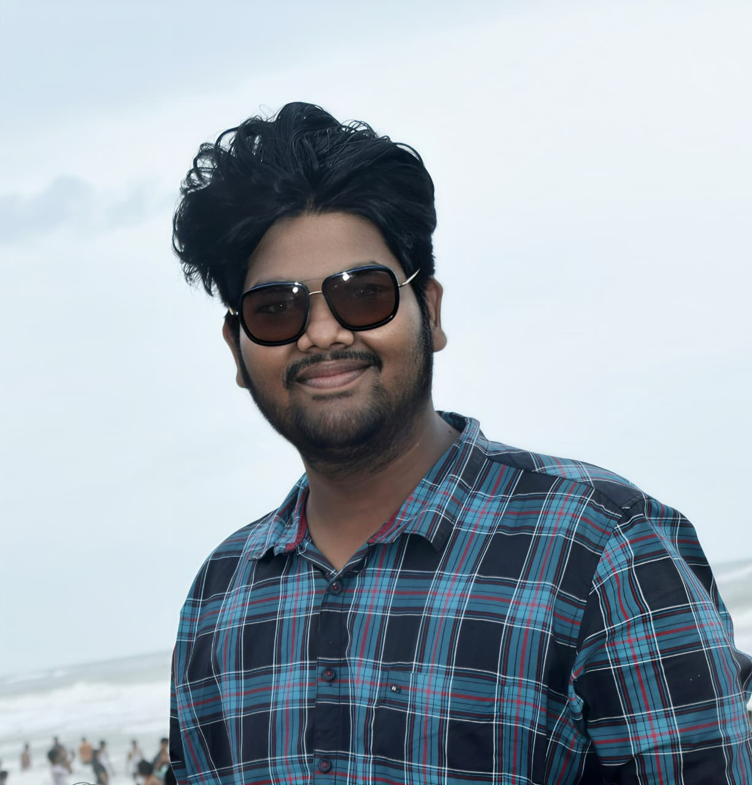

Programming
Writing programs and developing problem-solving habits.
PythonRJava
Hello, I'm Sujal Jena
I'm a second-year Data Science student at Ravenshaw University, building my skills in programming, statistics, data analysis, and practical technology projects.

Python / RData + InsightsBuild · Learn · ImproveA little about me
I enjoy learning how data and software can help solve practical problems.
I'm developing a strong foundation in data science and exploring how to turn classroom concepts into useful projects.
My learning journey includes Python, R, and Java, along with database concepts, probability, statistics, and data visualization. I'm working on structuring problems, exploring data, and explaining results clearly.
I'm also interested in technology for real-world challenges, including climate resilience, water management, and sustainable agriculture. I value teamwork, consistent practice, and learning from feedback.
My goal is to build meaningful projects, strengthen my technical fundamentals, and prepare for internships and collaborative opportunities.
What I'm learning
A snapshot of the technologies and concepts I'm studying and practicing.
Writing programs and developing problem-solving habits.
Working with structured data and database concepts.
Building the mathematical foundation for data analysis.
Presenting patterns and findings clearly.
Creating responsive pages and learning interactive behavior.
Practicing communication, teamwork, and project planning.
My background
The academic steps shaping my interests and technical foundation.
Currently in my second year, studying data science, programming, probability and statistics, databases, and management concepts.
Completed higher secondary education before moving on to undergraduate studies.
Selected work
Project concepts to practice coding, data, and product thinking.
A software-based climate, water, and energy management concept to help users understand risks such as heat, heavy rainfall, and water scarcity using available data.
A smart-agriculture concept focused on weather-aware irrigation suggestions, crop information, and efficient use of water and electricity.
Let's connect
I'm interested in connecting with fellow learners, project teams, and people working on useful technology.
Feel free to reach out by email or connect on GitHub and LinkedIn.